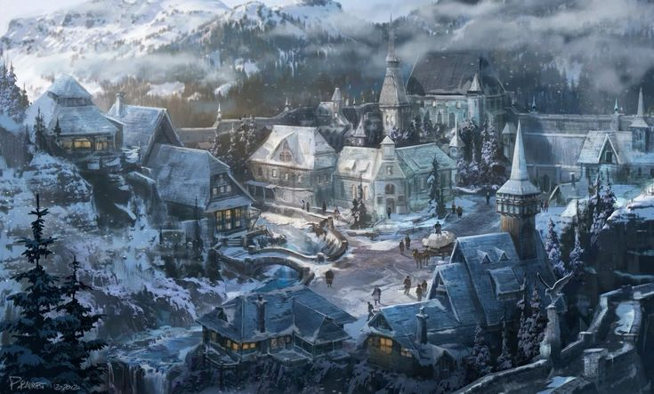
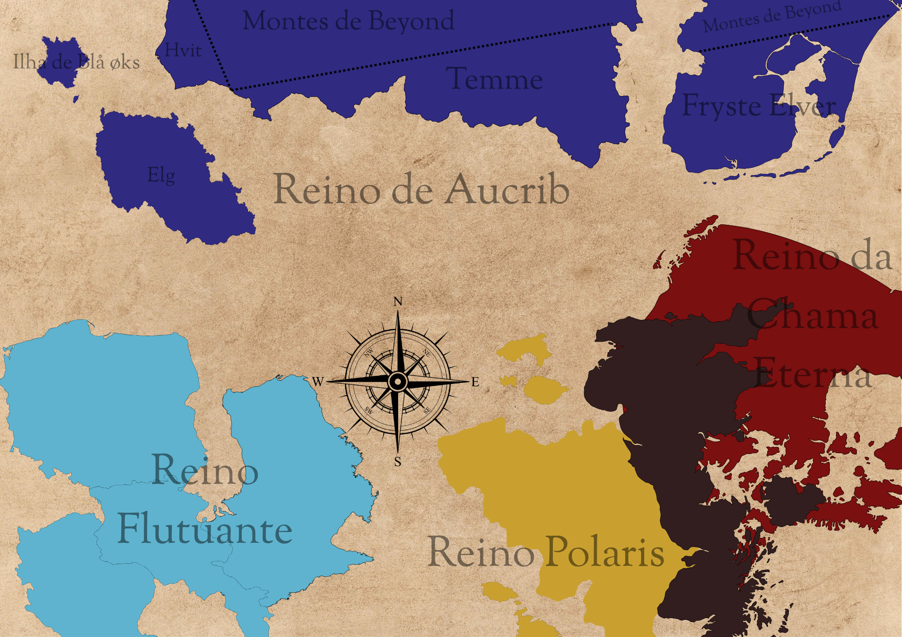

✦ os reinos ✦
A mais velha das gêmeas da Mãe Gélida
Ela alimentou seu povo com o que mais amava — dando da própria carne. O norte nunca esqueceu o preço desse amor.
✦ história
Quando Skadi, a Mãe Gélida, enviou suas filhas gêmeas para governar as terras do norte e do sul, foi a mais velha delas — Aucrib — quem recebeu o fardo mais pesado: o norte, onde o frio não pede licença e a colheita é sempre uma aposta contra o inverno.
A história que o reino carrega como fundação não é de glória, mas de sacrifício. Conta a tradição oral que, em um inverno particularmente brutal — um dos que Skadi enviou durante o período em que Polaris se afastou e o frio tomou o que a luz havia deixado —, Aucrib viu seu povo definhando de fome sem que houvesse nada a ser caçado, colhido ou pescado.
Foi então que ela fez o que nenhum deus havia feito antes: deu de si mesma. Da própria carne, Aucrib alimentou seu povo. Não como metáfora, não como sacrifício simbólico — mas literalmente, uma caçadora corajosa que diante dos lobos do inverno ofereceu o que tinha.
O povo sobreviveu. E Aucrib, ao contrário de sua irmã Leskie, não foi punida por isso — foi venerada. Talvez porque o norte, diferente do sul, soubesse reconhecer o custo de um amor assim. O Reino de Aucrib nasceu desse reconhecimento: uma terra austera que aprendeu a gratidão da forma mais difícil possível.
Até hoje, as divindades cultuadas no reino são Skadi e Aucrib — mãe e filha, frio e calor impossível que veio do sacrifício.
✦ cartografia

Quatro territórios dividem o que restou do calor de Aucrib — presos entre o gelo dos Montes de Beyond ao norte e o mar que recorta suas costas em ilhas e fiordes.
Fryste Elver
Onde os lagos se encontram com os mares congelados. Sede da Família Skjold, responsável pelo abastecimento e pela manutenção de alimentos de todo o reino — um laço de confiança firmado ainda com a própria Aucrib, nascido de uma disputa amistosa de pesca entre a deusa e o patriarca da família.
Temme
Erguida aos pés dos Montes de Beyond, é uma cidade-estado dedicada por completo à criação de animais, ao adestramento e ao treinamento de feras. Governada pela Família Bester, cujo domínio sobre criaturas selvagens impressionou a própria Aucrib o bastante para conceder-lhes o título de Duques.
Hvit
A mais ao norte das cidades-estado, vizinha da Ilha de Blå øks e dos próprios Montes de Beyond. É lar do Instituto Machado Azul, escola de magia mantida pela Família Snø, onde a magia adormecida no sangue dos meio-unicórnios finalmente encontrou espaço para florescer.
Elg
Uma ilha isolada a oeste do reino e seu coração político: sede da Dinastia Caribu e residência da rainha Clarisse, filha mais velha da própria deusa fundadora.
✦ elenco do reino
Quatro casas sustentam o legado da deusa que se deu por inteiro ao seu povo — uma na coroa, três a serviço da terra que ela deixou para trás.
✦ tradições
LENDA
A deusa que diante dos lobos do inverno não fugiu — deu de si mesma para que seu povo não morresse de fome. O norte não esquece o que o frio ensina.
DEVOÇÃO
Mãe e filha cultuadas juntas — Skadi como a força primordial que gerou o frio e os que nele sobrevivem, e Aucrib como a prova de que amor pode ser mais quente que qualquer chama.
TRADIÇÃO
Inserir texto...
CRENÇA
Inserir texto...